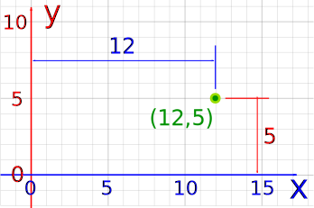
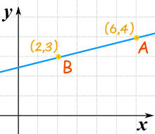
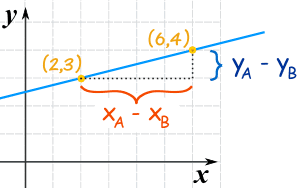
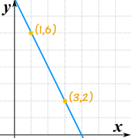

Equation of a Line from 2 Points
First, let's see it in action. Here are two points (you can drag them) and the equation of the line through them. Explanations follow.
The Points
We use Cartesian Coordinates to mark a point on a graph by how far along and how far up it is:

Example: The point (12,5) is 12 units along, and 5 units up
Steps
There are 3 steps to find the Equation of the Straight Line :
- 1. Find the slope of the line
- 2. Put the slope and one point into the "Point-Slope Formula"
- 3. Simplify
Step 1: Find the Slope (or Gradient) from 2 Points
What is the slope (or gradient) of this line?

We know two points:
- point "A" is (6,4) (at x is 6, y is 4)
- point "B" is (2,3) (at x is 2, y is 3)
The slope is the change in height divided by the change in horizontal distance.
Looking at this diagram ...

Slope m = change in ychange in x = yA − yBxA − xB
In other words, we:
- subtract the Y values,
- subtract the X values
- then divide
Like this:
m = change in y change in x = 4−3 6−2 = 1 4 = 0.25
It doesn't matter which point comes first, it still works out the same. Try swapping the points:
m = change in y change in x = 3−4 2−6 = −1 −4 = 0.25
Same answer.
Step 2: The "Point-Slope Formula"
Now put that slope and one point into the "Point-Slope Formula"
Start with the "point-slope" formula (x1 and y1 are the coordinates of a point on the line):
y − y1 = m(x − x1)
We can choose any point on the line for x1 and y1, so let's just use point (2,3):
y − 3 = m(x − 2)
We already calculated the slope "m":
m = change in ychange in x = 4−36−2 = 14
And we have:
y − 3 = 14(x − 2)
That is an answer, but we can simplify it further.
Step 3: Simplify
And we get:
y = x4 + 52
Which is now in the Slope-Intercept (y = mx + b) form.
Check It!
Let us confirm by testing with the second point (6,4):
y = x/4 + 5/2 = 6/4 + 2.5 = 1.5 + 2.5 = 4
Yes, when x=6 then y=4, so it works!
Another Example
Example: What is the equation of this line?

Start with the "point-slope" formula:
y − y1 = m(x − x1)
Put in these values:
- x1 = 1
- y1 = 6
- m = (2−6)/(3−1) = −4/2 = −2
And we get:
y − 6 = −2(x − 1)
Simplify to Slope-Intercept (y = mx + b) form:
y − 6 = −2x + 2
y = −2x + 8
DONE!
The Big Exception
The previous method works nicely except for one particular case: a vertical line:

|
A vertical line's gradient is undefined (because we cannot divide by 0): m = yA − yBxA − xB = 4 − 12 − 2 = 30 = undefined But there is still a way of writing the equation: use x= instead of y=, like this: x = 2 |